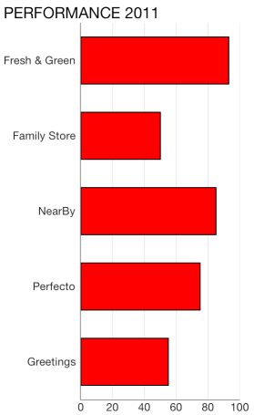
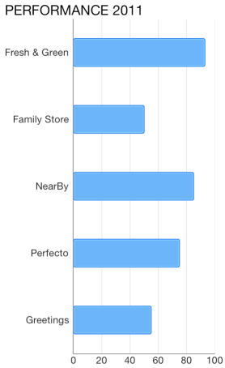

Chart Series: Bar
TKChartBarSeries are used to visualize data points as bar blocks where the width of each bar denotes the magnitude of its value. The following snippet demonstrates how to manually populate one Bar series:
Objective-C
NSMutableArray *pointsWithCategoriesAndValues = [[NSMutableArray alloc] init];
NSArray *categories = @[ @"Greetings", @"Perfecto", @"NearBy", @"Family Store", @"Fresh & Green" ];
NSArray *values = @[ @70, @75, @58, @59, @88 ];
for (int i = 0; i < categories.count; i++) {
TKChartDataPoint *dataPoint = [[TKChartDataPoint alloc] initWithX:values[i] Y:categories[i]];
[pointsWithCategoriesAndValues addObject:dataPoint];
}
TKChartBarSeries *series = [[TKChartBarSeries alloc] initWithItems:pointsWithCategoriesAndValues];
[chart addSeries:series];
Swift
var pointsWithCategoriesAndValues = [TKChartDataPoint]()
let categories = ["Greetings", "Perfecto", "NearBy", "Family Store", "Fresh & Green"];
let values = [70, 75, 58, 59, 88]
for var i = 0; i < categories.count; ++i {
pointsWithCategoriesAndValues += TKChartDataPoint(x: values[i], y: categories[i])
}
let series = TKChartBarSeries(items: pointsWithCategoriesAndValues)
chart.addSeries(series)

Configure clustering of bar series
If you want to cluster multiple bar series side by side, they should use a shared y-axis:
Objective-C
NSMutableArray *pointsWithCategoriesAndValues = [[NSMutableArray alloc] init];
NSMutableArray *pointsWithCategoriesAndValues2 = [[NSMutableArray alloc] init];
NSArray *categories = @[ @"Greetings", @"Perfecto", @"NearBy", @"Family Store", @"Fresh & Green" ];
NSArray *values = @[ @70, @75, @58, @59, @88 ];
for (int i = 0; i < categories.count; i++) {
TKChartDataPoint *dataPoint = [[TKChartDataPoint alloc] initWithX:values[i] Y:categories[i]];
[pointsWithCategoriesAndValues addObject:dataPoint];
}
NSArray *values2 = @[ @40, @80, @35, @69, @95 ];
for (int i = 0; i < categories.count; i++) {
TKChartDataPoint *dataPoint = [[TKChartDataPoint alloc] initWithX:values2[i] Y:categories[i]];
[pointsWithCategoriesAndValues2 addObject:dataPoint];
}
TKChartCategoryAxis *categoryAxis = [[TKChartCategoryAxis alloc] initWithCategories:categories];
chart.yAxis = categoryAxis;
TKChartSeries *series1 = [[TKChartBarSeries alloc] initWithItems:pointsWithCategoriesAndValues];
series1.yAxis = categoryAxis;
TKChartSeries *series2 = [[TKChartBarSeries alloc] initWithItems:pointsWithCategoriesAndValues2];
series2.yAxis = categoryAxis;
[chart beginUpdates];
[chart addSeries:series1];
[chart addSeries:series2];
[chart endUpdates];
Swift
var pointsWithCategoriesAndValues = [TKChartDataPoint]()
var pointsWithCategoriesAndValues2 = [TKChartDataPoint]()
let categories = ["Greetings", "Perfecto", "NearBy", "Family Store", "Fresh & Green" ];
let values = [70, 75, 58, 59, 88]
for var i = 0; i < categories.count; ++i {
pointsWithCategoriesAndValues.append(TKChartDataPoint(x: values[i], y: categories[i]))
}
let values2 = [40, 80, 32, 69, 95]
for var i = 0; i < categories.count; ++i {
pointsWithCategoriesAndValues2.append(TKChartDataPoint(x: values2[i], y: categories[i]))
}
let categoryAxis = TKChartCategoryAxis(categories: categories)
chart.yAxis = categoryAxis
let series1 = TKChartBarSeries(items: pointsWithCategoriesAndValues)
series1.yAxis = categoryAxis
let series2 = TKChartBarSeries(items: pointsWithCategoriesAndValues2)
series2.yAxis = categoryAxis
chart.beginUpdates()
chart.addSeries(series1)
chart.addSeries(series2)
chart.endUpdates()
Configure stacking of bar series
The TKChartBarSeries can be combined by using different stack modes.
The Stack plots the points on top of each other:
Objective-C
TKChartStackInfo *stackInfo = [[TKChartStackInfo alloc] initWithID:@(1) withStackMode:TKChartStackModeStack];
TKChartBarSeries *series1 = [[TKChartBarSeries alloc] initWithItems:pointsWithCategoriesAndValues];
series1.stackInfo = stackInfo;
TKChartBarSeries *series2 = [[TKChartBarSeries alloc] initWithItems:pointsWithCategoriesAndValues2];
series2.stackInfo = stackInfo;
[chart beginUpdates];
[chart addSeries:series1];
[chart addSeries:series2];
[chart endUpdates];
Swift
let stackInfo = TKChartStackInfo(ID: 1, withStackMode: TKChartStackMode.Stack)
let series1 = TKChartBarSeries(items: pointsWithCategoriesAndValues)
series1.stackInfo = stackInfo
let series2 = TKChartBarSeries(items: pointsWithCategoriesAndValues2)
series2.stackInfo = stackInfo
chart.beginUpdates()
chart.addSeries(series1)
chart.addSeries(series2)
chart.endUpdates()

The Stack100 displays the value as percent:
Objective-C
TKChartStackInfo *stackInfo = [[TKChartStackInfo alloc] initWithID:@(1) withStackMode:TKChartStackModeStack100];
TKChartBarSeries *series1 = [[TKChartBarSeries alloc] initWithItems:pointsWithCategoriesAndValues];
series1.stackInfo = stackInfo;
TKChartBarSeries *series2 = [[TKChartBarSeries alloc] initWithItems:pointsWithCategoriesAndValues2];
series2.stackInfo = stackInfo;
[chart beginUpdates];
[chart addSeries:series1];
[chart addSeries:series2];
[chart endUpdates];
Swift
let stackInfo = TKChartStackInfo(ID: 1, withStackMode: TKChartStackMode.Stack100)
let series1 = TKChartBarSeries(items: pointsWithCategoriesAndValues)
series1.stackInfo = stackInfo
let series2 = TKChartBarSeries(items: pointsWithCategoriesAndValues2)
series2.stackInfo = stackInfo
chart.beginUpdates()
chart.addSeries(series1)
chart.addSeries(series2)
chart.endUpdates()

Configure visual appearance of bar series
If you would like to customize the appearance of bar series, you should change its style properties.
You can change the fill and stroke in the following manner:
Objective-C
TKChartBarSeries *series = [[TKChartBarSeries alloc] initWithItems:pointsWithCategoriesAndValues];
series.style.palette = [[TKChartPalette alloc] init];
TKChartPaletteItem *palleteItem = [[TKChartPaletteItem alloc] init];
palleteItem.fill = [TKSolidFill solidFillWithColor:[UIColor redColor]];
palleteItem.stroke = [TKStroke strokeWithColor:[UIColor blackColor]];
[series.style.palette addPaletteItem:palleteItem];
[chart addSeries:series];
Swift
let series = TKChartBarSeries(items: pointsWithCategoriesAndValues)
series.style.palette = TKChartPalette()
let paletteItem = TKChartPaletteItem()
paletteItem.fill = TKSolidFill(color: UIColor.redColor())
paletteItem.stroke = TKStroke(color: UIColor.blackColor())
series.style.palette.addPaletteItem(paletteItem)
chart.addSeries(series)

You can change the gap between columns with the following code snippet:
Objective-C
TKChartBarSeries *series = [[TKChartBarSeries alloc] initWithItems:pointsWithCategoriesAndValues];
series.gapLength = 0.5;
[chart addSeries:series];
Swift
let series = TKChartBarSeries(items: pointsWithCategoriesAndValues)
series.gapLength = 0.5
chart.addSeries(series)
Note that the value should be between 0 and 1, where a value of 0 means that a bar would take the entire space between two ticks, while a value of 1 means the bar will have zero width as all the space should appear as a gap.

It is also possible to limit the height of the bar using maxBarHeight and minBarHeight properies. Objective-C
TKChartBarSeries *series = [[TKChartBarSeries alloc] initWithItems:pointsWithCategoriesAndValues];
series.minBarHeight = @20;
series.maxBarHeight = @50;
[chart addSeries:series];
Swift
let series = TKChartBarSeries(items: pointsWithCategoriesAndValues)
series.minBarHeight = 20
series.maxBarHeight = 50
chart.addSeries(series)